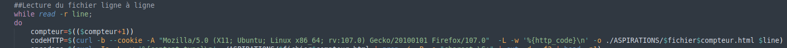
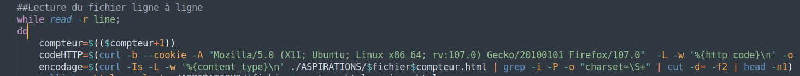
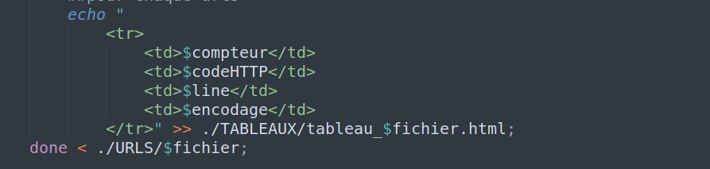

Cinquième étape : Intégration codes HTTP et encodage des urls aux tableaux HTML.
Suite à la création des tableaux HTML, nous avons continué progressivement leur remplissage. Dans cette étape nous avons ajouté aux tableaux HTML les codes HTTP des tous les urls et leur encodage. Pour cela faire nous avons procédé de la façon suivante à la modification de notre script bash/HTML :
Code HTTP des urls
Pour chaque urls traité par la boucle “while”, nous avons executé une commande “curl” qui nous a retourné en tant que resultat le code HTTP de ces derniers. La ligne de code que nous avons écrit est la suivante :
Après la déclaration de la variable “codeHTTP”, nous lui avons attribué le resultat de plusieurs opérations effectuées sur les aspirations de “curl”. Pour que “curl” nous renvoie seulement le code HTTP de l’url traité, nous avons choisi plusieurs options de "curl" disponibles :
- -b --cookie = pour accepter les cookies eventuels
- -A = spécification de l’user agent
- -L = permet à “curl” de suivre toutes les redirections
- -w = permet à “curl” de montrer l’output (le code HTTP) en sortie standard
- -o = permet de stocker la page aspirée dans un fichier spécifié
Une fois que la variable “codeHTTP” contient le code HTTP de l’url traité, nous l’avons ajoutée aux tableaux HTML crée lors de l’étape précedente. Il est important aussi de remarquer que les aspirations des tous les urls ont été stockées et triées dans un dossier appelé ASPIRATIONS.
Encodage des textes des urls
Afin de retrouver l’encodage des caractères des textes des articles constituants notre corpus, nous avons écrit la ligne de commnde suivante :

Comme vu auparavant, ici aussi on a déclaré une varable “encodage” et nous y avons stocké dedans le resultat d’une opération “curl”, “grep”,”cut” et “head” dans l’ordre ci-precisé. Les options choisis pour “curl” cette fois ci-sont :
- -I = “curl” affihe seulement les headers
- -s = mode silence de “curl”
- -w = permet à “curl” de montrer l’output (l’encodage) en sortie standard
Toutefois, le resultat de “curl” n’était pas encore parfait car on devait encore isoler l’encodage sans qu’autres portions du texte du header n’apparaissent. Pour cela faire nous avons utilisé “grep” sur la sortie standard de “curl” avec les options suivantes :
- -i = “grep” ignore la casse
- -P = “grep” interprète le pattern fourni comme une expression régulière Perl
- -o = “grep” affiche seulement le texte qui matche le pattern fourni
À ce moment là, il nous fallait absulement éliminer le mot “charset=” pour garder juste le portion du texte qui suit. C’est donc avec “cut” que nous avons divisé la sortie de “grep” en ce qui est avant le symbole “=” et ce qui suit ce symbole. Ensuite nous en avons recuperé la déuixème ligne où il est marqué l’encodage du texte de l’article et nous avons ajouté la valeur de la variable "encodage" à nos tableaux HTML :
